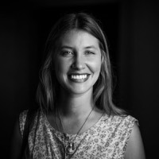
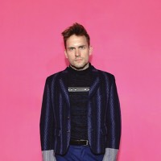
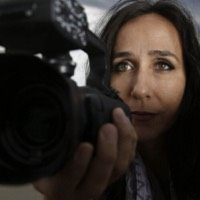

International Documentary Association
66 people whose festival biography mentions International Documentary Association. A mention can mean a job, a past job, a grant, a broadcast or an award: read the bio for which.


 Matthew HeinemanFilmmaker, panelist · 3 editions, 2015–2022
Matthew HeinemanFilmmaker, panelist · 3 editions, 2015–2022 Simon KilmurryModerator, panelist, filmmaker · 3 editions, 2016–2025International Documentary Association
Simon KilmurryModerator, panelist, filmmaker · 3 editions, 2016–2025International Documentary Association

- Adam SegalFestival team · 3 editions, 2017–2019

 Violeta AyalaFilmmaker, panelist · 2 editions, 2017–2021
Violeta AyalaFilmmaker, panelist · 2 editions, 2017–2021- Assia BoundaouiPanelist, filmmaker · 2 editions, 2017–2018

- Heather CourtneyPanelist, filmmaker · 2 editions, 2017–2018
- Ramona DiazFilmmaker, panelist · 2 editions, 2019–2020


- Johanna HamiltonFilmmaker, panelist, workshop leader · 2 editions, 2015–2018


Hanna Lane MillerPanelist, filmmaker · 2 editions, 2018–2025
 Rachel Lauren Mueller · Anne Sundberg · Yoruba RichenFilmmaker, panelist · 2 editions, 2022–2026
Rachel Lauren Mueller · Anne Sundberg · Yoruba RichenFilmmaker, panelist · 2 editions, 2022–2026 Poh Si TengPanelist, workshop leader · 2 editions, 2018–2021
Poh Si TengPanelist, workshop leader · 2 editions, 2018–2021 Nanfu WangPanelist · 2 editions, 2019–2021
Nanfu WangPanelist · 2 editions, 2019–2021
 Opal Hope BennettPanelist · 2021
Opal Hope BennettPanelist · 2021 Maggie BowmanPanelist · 2021
Maggie BowmanPanelist · 2021 Yoni BrookPanelist · 2021
Yoni BrookPanelist · 2021 Andrew H. BrownFilmmaker · 2026
Andrew H. BrownFilmmaker · 2026 Kenneth BrownPanelist · 2021
Kenneth BrownPanelist · 2021
Gabriela CowperthwaiteFilmmaker · 2022 Carol DysingerFilmmaker, panelist · 2023
Carol DysingerFilmmaker, panelist · 2023 Violet Du FengPanelist · 2021
Violet Du FengPanelist · 2021- Kristi JacobsonFilmmaker, panelist · 2016


- Dan KraussPanelist · 2015
 Rachel LearsPanelist · 2021
Rachel LearsPanelist · 2021 Marc Levin2021
Marc Levin2021- Stephen MaingPanelist · 2018
 Stanley NelsonFilmmaker, panelist · 2021
Stanley NelsonFilmmaker, panelist · 2021 David NovackFilmmaker, panelist · 2023
David NovackFilmmaker, panelist · 2023 Enrique Pedráza-BoteroPanelist, filmmaker · 2025
Enrique Pedráza-BoteroPanelist, filmmaker · 2025- Maxim PozdorovkinFilmmaker, panelist · 2018
- Heidi ReinbergWorkshop leader · 2019
 Julian RubinsteinPanelist · 2023
Julian RubinsteinPanelist · 2023- Marjan SafiniaPanelist · 2021

 Norah ShapiroPanelist, filmmaker · 2025
Norah ShapiroPanelist, filmmaker · 2025 Kristal SotomayorPanelist · 2021
Kristal SotomayorPanelist · 2021 David Felix SutcliffeFilmmaker, panelist · 2015
David Felix SutcliffeFilmmaker, panelist · 2015- Paul TaylorFilmmaker · 2020